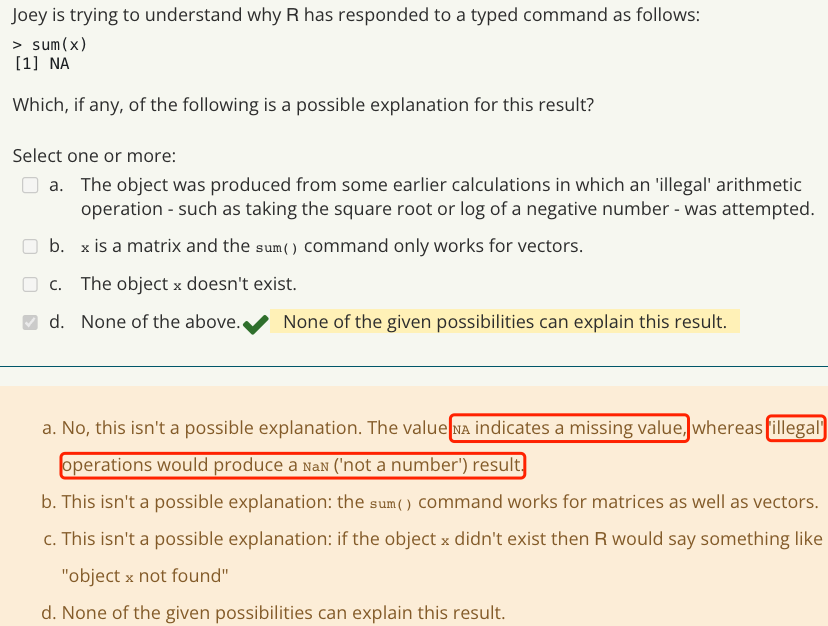
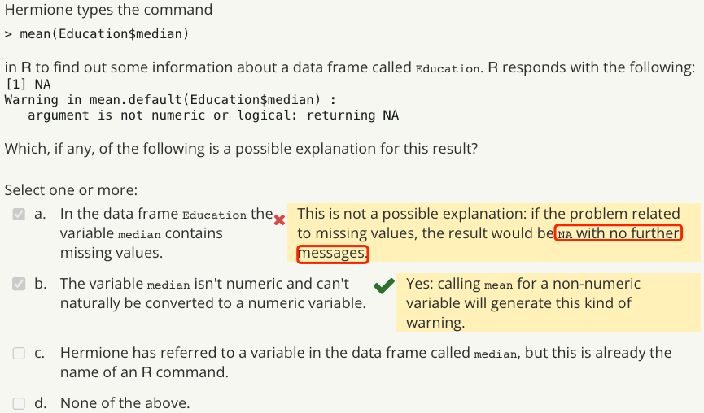
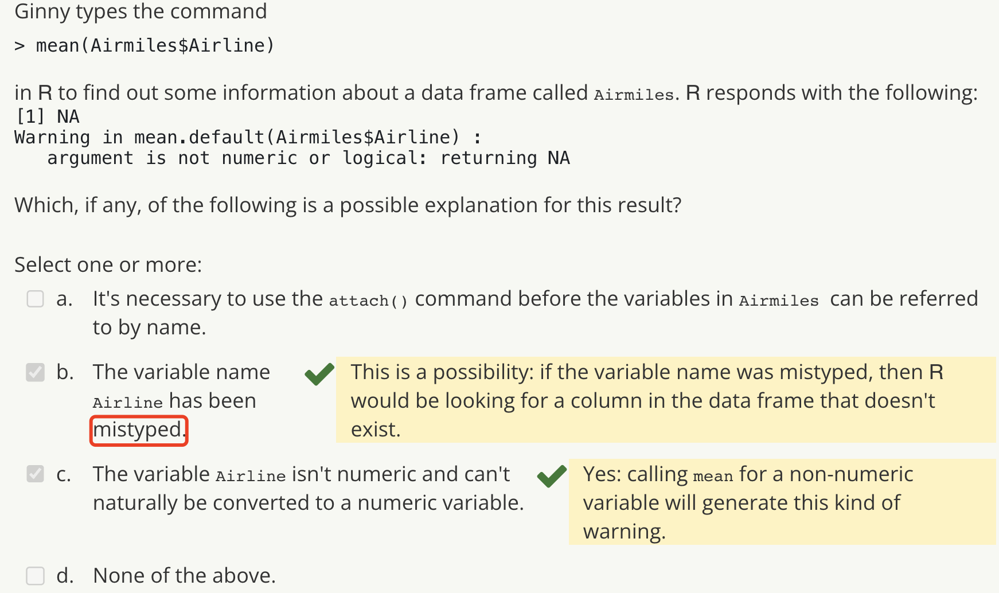
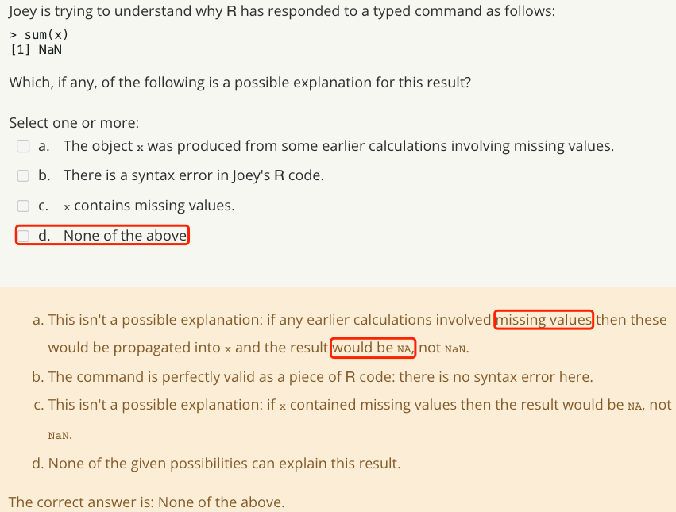
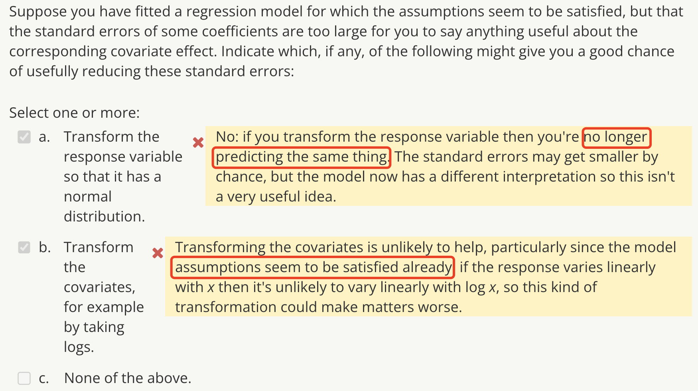
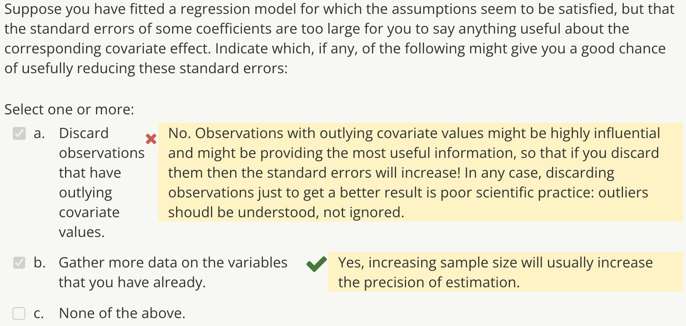
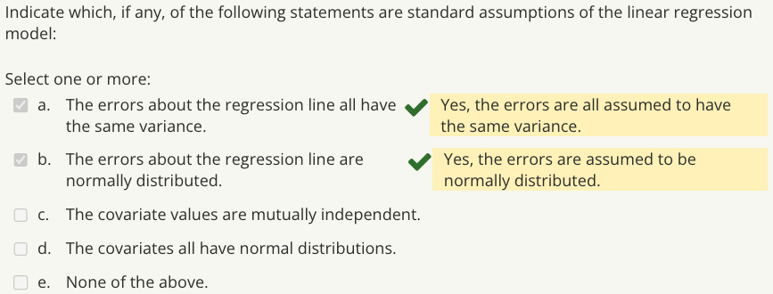
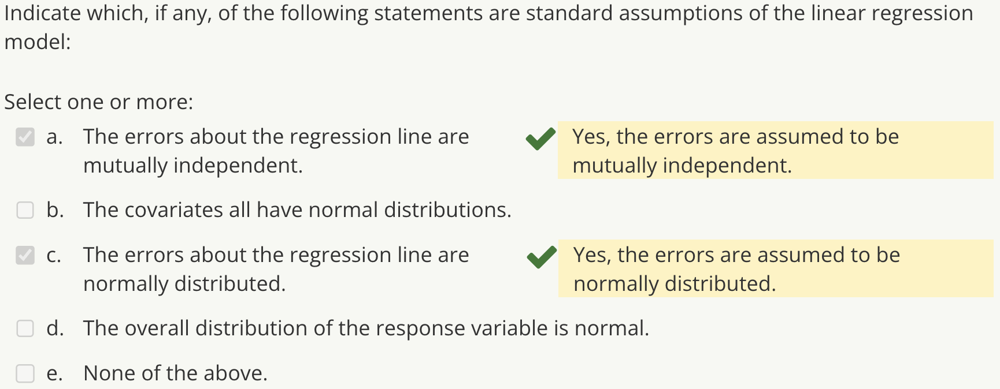
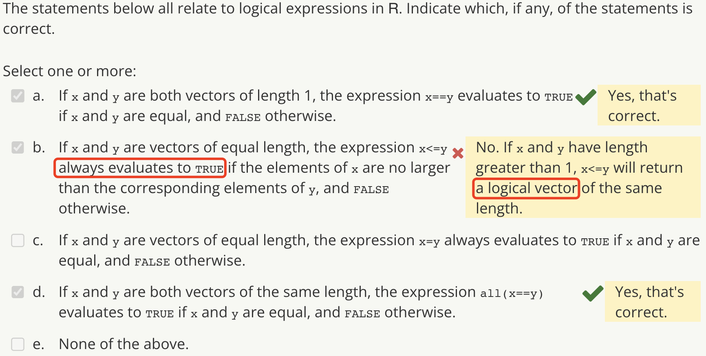

library(Hmisc)
library(RColorBrewer)
library(ggplot2)
library(maps)
library(robustbase)Cary’s Personal Workspace
KEEP LEARNING!
STAT0023 ICA1 Quiz
Required Packages
Week 1
R Basics
NA



NaN

Exploratory Analysis
Galapagos Islands Data (species.data)
species.data <- read.table("galapagos.dat", header = TRUE)What is the name of the (smallest) / (second largest) Galapagos island in the dataset?
## the smallest
rownames(species.data)[which.min(species.data$Area)]
## the second largest
rownames(species.data)[order(species.data$Area, decreasing = TRUE)[2]]How many plant species are there in total on the second largest Galapagos island in the dataset?
species.data$Species[order(species.data$Area, decreasing = TRUE)[2]]What is the name of the island with a value of 25 for the Elevation variable?
rownames(species.data)[species.data$Elevation == 25]How many islands have fewer than 25 species in total?
sum(species.data$Species < 25)What is the estimated slope in a linear regression of Area upon Scruz?
Model <- lm(Area ~ Scruz, data = species.data)
summary(Model)
print(Model$coefficients, digits = 8)Iris Data
iris <- irisWhat is the mean of the petal widths for all of the flowers in the dataset?
mean(iris$Petal.Width)What is the mean of the petal widths for all of the “setosa” flowers in the dataset?
mean(iris$Petal.Width[iris$Species == "setosa"])
## or
tapply(iris$Petal.Width, INDEX = iris$Species, FUN = mean)Considering the petal lengths of the flowers, which of the three species has the largest standard deviation?
tapply(iris$Petal.Length, INDEX = iris$Species, FUN = sd)What is the 40th percentile of the petal lengths for all of the flowers in the dataset?
print(quantile(iris$Petal.Length, probs = 0.4), digits = 8)Considering the petal lengths of the flowers, which of the three species has the largest 90th percentile?
tapply(iris$Petal.Length, INDEX = iris$Species, FUN = quantile, probs = 0.9)Carry out a two-tailed t test, assuming equal variances, for a difference between the population mean petal widths for “versicolor” and “virginica” flowers.
result <- t.test(iris$Petal.Width[iris$Species == "versicolor"],
iris$Petal.Width[iris$Species == "virginica"],
var.equal = TRUE)
print(result, digits = 8)Carry out an F test of the null hypothesis that the population variance of sepal lengths is the same for flowers of “setosa” and “virginica” species.
result <- var.test(iris$Sepal.Length[iris$Species == "setosa"],
iris$Sepal.Length[iris$Species == "virginica"])
print(result, digits = 8)To three decimal places, what is the lower limit of a 90% confidence interval for the difference between the population mean petal widths for “versicolor” and “virginica” flowers?
result <- t.test(iris$Petal.Width[iris$Species == "versicolor"],
iris$Petal.Width[iris$Species == "virginica"],
var.equal = TRUE,
conf.level = 0.90)
print(result, digits = 8)Graphics
x <- seq(-2, 2, 0.05)
x2 <- x^2
x3 <- x^3
plot(x, x2)
lines(x, x3, lwd = 2, col = "red")ChickWeight Data
ChickWeight <- ChickWeightCO2 Data
CO2 <- CO2Week 2
Regression Models: Assumptions and Interpretation
Deal With Standard Errors


Standard Assumptions of the Linear Regression Model


Iris Data
iris <- irisModel 0 (No Intercept)
Model <- lm(Petal.Length ~ Species - 1, data = iris)
summary(Model)The coefficient estimates in the above model (no intercept) are just the sample means.
Model 1 (Intercept Included)
Model <- lm(Petal.Length ~ Species, data = iris)
summary(Model)The intercept in the above model (intercept included) is the Setosa sample mean. The coefficient estimates are the differences between the respective means and the Setosa mean.
Model 2 (“Sum to Zero” Constraint)
Model <- lm(Petal.Length ~ Species, data = iris, contrasts = list(Species = "contr.sum"))
summary(Model)Species 1: Setosa
Species 2: Versicolor
Species 3: Virginica
The intercept in the above model (“sum to zero” constraint) is the overall mean petal length for all the iris flowers. The coefficients represent the differences between the respective means and the overall mean.
Model 3
Model <- lm(Petal.Length ~ Species + Sepal.Length, data = iris)
summary(Model)The intercept in the above model is the expected petal length for Setosa when the sepal length is zero.
Model 4 (Interaction Included)
Model <- lm(Petal.Length ~ Species + Sepal.Length + Species:Sepal.Length, data = iris)
summary(Model)The main effect coefficients for Versicolor and Virginica represent differences relative to Setosa. Two additional coefficients for the interactions represent differences in the slopes of the Petal.Length:Sepal.Length relationship for these two species, relative to the slope for Setosa flowers.
Note: Interactions have nothing to do with correlations between covariates: rather, they relate to the way in which the relationship between one covariate and the response varies with another covariate.
UStemps Data
load("UStemps.rda")
ustemp$longitude <- -ustemp$longitudeModel 1 (Base Model)
Model1 <- lm(min.temp ~ latitude + longitude, data = ustemp)
summary(Model1)Model 2 (Quadratic Model)
Model2 <- lm(min.temp ~ latitude + longitude + I(latitude^2) + I(longitude^2) + latitude:longitude, data = ustemp)
summary(Model2)Model 2 (Quadratic Model) Diagnostics Plots
par(mfrow = c(2,2),
mar = c(3,3,2,2),
mgp = c(2,0.75,0))
plot(Model2, which = 1:4)Cook’s Distance plot shows three observations that may be influential, they are:
ustemp[c(5, 13, 52), ]
## 5: Los Angeles, CA
## 13: Miami, FL
## 52: Seattle, WAModel 2Rob (Robust Fit of the Quadratic Model)
Model2Rob <- lmrob(min.temp ~ latitude + longitude + I(latitude^2) + I(longitude^2) + latitude:longitude, data = ustemp)
summary(Model2Rob)Note: the purpose of robust estimation is to try and include all of the observations, but to limit the extent to which any individual observation can influence the fit.
Get your Eyes in: Residual Plots
Failures of Assumptions
The main things that can result in incorrect standard errors are non-constant variance and dependence between residuals
Systematic structure in mean residuals
“Residuals vs Fitted Values” plot, or “Residuals vs Covariates” plot.
Such structure indicates that the modelled representation of the regression function is inadequate. Whether this matters is context-specific: you may decide, for example, that the residuals are all so small that your model is already predicting well enough.
Non-constant variance
“Residuals vs Fitted Values” plot may exhibit a “funnel” shape (i.e. the residual variance seems higher at one end than the other).
“Scale-Location” plot: the absolute residuals tend to be larger at one end than the other.
In this case, the least-squares estimates are not fully efficient (i.e. you’re not making the best use of your data), and the reported standard errors will be incorrect — as will the results of any hypothesis tests and confidence interval calculations.
Non-normal residuals
“Normal Q-Q plot”: the residuals don’t fall roughly on a straight line.
This is not critical in large samples, the exception is where you want to calculate prediction intervals for future observations: these will only be accurate if the future observations do indeed have an approximate normal distribution.
Lack of independence
Common situations in which it might be a problem are when data are collected at successive time points, or at a collection of spatial locations. Although none of the ‘standard’ plots is designed to check for this, lack of independence can lead to apparent structure in some of the residual plots. For example, if observations are collected sequentially in time and successive residuals are highly correlated, this can give the appearance of curvature in the “Residuals vs Fitted Values” plot: the curvature is not due to a nonlinear relationship between response and covariates, but simply due to the fact that neighbouring residuals are similar to each other because they are correlated.
Influential Observations
Rule-of-thumb: observation influential if Cook’s distance exceeds \(\frac{8}{n-2k}\), where k is the number of coefficients estimated.
Fix the Problem
Transform the response variable and / or covariate (but only if the resulting model makes scientific sense). Sometimes, a relationship can be made more linear by taking logs or square roots of one or more quantities; transforming the response variable can also help to make the residual variance more constant, and to make the assumption of normality more reasonable. Don’t take logs (or square roots) of quantities that could be negative, though!
Add additional terms to the model. For the temperature data for example, you might consider extending the quadratic model to include third-degree terms in latitude and longitude; or additional covariates such as altitude if these were available.
If the diagnostics suggest that the residual variance is related to the fitted values (e.g. the ‘residuals versus fitted values’ plot has a funnel shape) and there is good reason to suspect that the responses follow non-normal distributions (e.g. because they are counts, so that Poisson distributions might be more appropriate) then a more general class of models may be appropriate — such as generalized linear models (GLMs).
Week 3
Basic Programming Techniques
Logical Expressions

Write Some Expressions
Return TRUE if there is at least one strictly negative value in a vector x, and FALSE otherwise.
any(x<0)Extract the elements of a vector x that are both (i) strictly positive (ii) divisible by 10.
x[x>0&x%%10==0]Extract the rows of a matrix or data frame y for which the corresponding elements of a vector x are non-negative, where x is a vector with length equal to the number of rows of y.
y[x>=0,]Extract the elements of a vector y for which the corresponding elements of x are strictly negative.
y[x<0]trapezium() Function
Create a function to approximate an integral using the trapezium rule with equally spaced x values.
trapezium <- function(v, a, b) {
n <- length(v) - 1
h <- (b - a) / n
intv <- (h / 2) * (sum(v) + sum(v[2 : n]))
intv
}Use the above function to evaluate the integral \(\int_{1}^{5}arctan(x)dx\) with 39 evaluation points (i.e. so that the input vector v has 39 elements).
trapezium(atan(seq(1, 5,length.out = 39)), 1, 5)Week 4
Function Minimisation
Newton-Raphson Algorithm
Create a QuarticMin() function to minimise function \(h(x)=4x^2+5x+3\), with starting value \(x_0=-3\).
QuarticMin <- function(x0, tol = 1e-6, MaxIter = 100, Verbose = TRUE) {
x <- x0
Iter <- 0
dh.dx <- (8 * x) + 5 # First derivative
RelChange <- Inf
while (abs(dh.dx) > tol & abs(RelChange) > tol & Iter < MaxIter) {
if (Verbose) {
cat(paste("Iteration",Iter,": Estimate =",signif(x,5),
" Gradient = ",signif(dh.dx,5),"\n"))
}
x.old <- x
d2h.dx2 <- 8 # Second derivative
x <- x - (dh.dx / d2h.dx2)
dh.dx <- (8 * x) + 5 # First derivative
RelChange <- (x-x.old) / x.old
Iter <- Iter + 1
}
if (Verbose) cat("---\n")
hmin <- (4 * x^2) + (5 * x) + 3 # Original
list(x=x, hx=hmin, gradient=dh.dx, N.iter=Iter)
}
QuarticMin(-3)Note: In Iteration n, Estimate = \(x_{n}\).
tploglik() Function
Create a tploglik() function to returns the negative log likelihood of a truncated Poisson distribution, up to a constant.
tploglik <- function(theta, y) {
n <- length(y)
ybar <- mean(y)
n * (theta - (ybar * log(theta)) + log(1 - exp(-theta)))
}Truncated Poisson Distribution Data
TPdata <- rep(1:14, c(97, 164, 242, 182, 154, 83, 44, 19, 9, 7, 2, 0, 0, 1))Use nlm() and tploglik() functions to find the maximum likelihood estimate of \(\theta\) together with its estimated standard error. Use the sample mean of the original 1004 values as the starting point for nlm().
TP.fitted <- nlm(tploglik, mean(TPdata), y = TPdata, hessian = TRUE)## The MLE of theta
TP.fitted$estimate
## Estimated Standard Error of the MLE
1 / sqrt(TP.fitted$hessian)Non-linear Least Squares estimates
Data
NLSdata <- read.table(file = "nls2.dat", header = TRUE)Fit a linear model regressing log(Y) on x
Model_Log <- lm(log(Y) ~ x, data = NLSdata)
summary(Model_Log)sumsqerr() function to compute sum of squared errors
sumsqerr <- function(theta, x, Y) {
beta0 <- theta[1]
beta1 <- theta[2]
mu <- beta0 * exp(beta1 * x)
sum((Y - mu)^2)
}For your nonlinear model, what is the sum of squared errors for the parameter values \(\beta_0=1.4\), \(\beta_1=-0.1\)?
sumsqerr(c(1.4, -0.1), x = NLSdata$x, Y = NLSdata$Y)Try fitting your nonlinear model using nlm(), with starting values \(\beta_0=-0.8\) and \(\beta_1=-0.6\). Compare the minimised sum of squares with the value that you obtained in the workshop starting from \(\beta_0=1.3\) and \(\beta_1=-0.3\). Has nlm() located (approximately) the same minimum this time?
NLS.fit1 <- nlm(sumsqerr, c(-0.8, -0.6), x = NLSdata$x, Y = NLSdata$Y, hessian = TRUE)
NLS.fit2 <- nlm(sumsqerr, c(1.3, -0.3), x = NLSdata$x, Y = NLSdata$Y, hessian = TRUE)Try fitting the model using nlm(), with starting values \(\beta_0=0.2\) and \(\beta_1=0.4\). At the estimated minimum, what is the (2, 2) element of the Hessian matrix of the sum of squares?
NLS.fit3 <- nlm(sumsqerr, c(0.2, 0.4), x = NLSdata$x, Y = NLSdata$Y, hessian = TRUE)
NLS.fit3$hessian[2, 2]